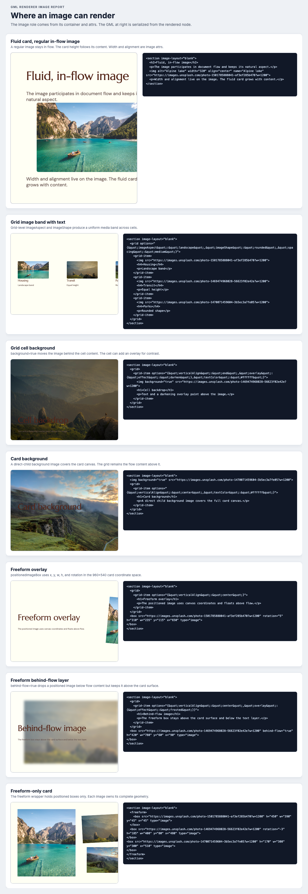
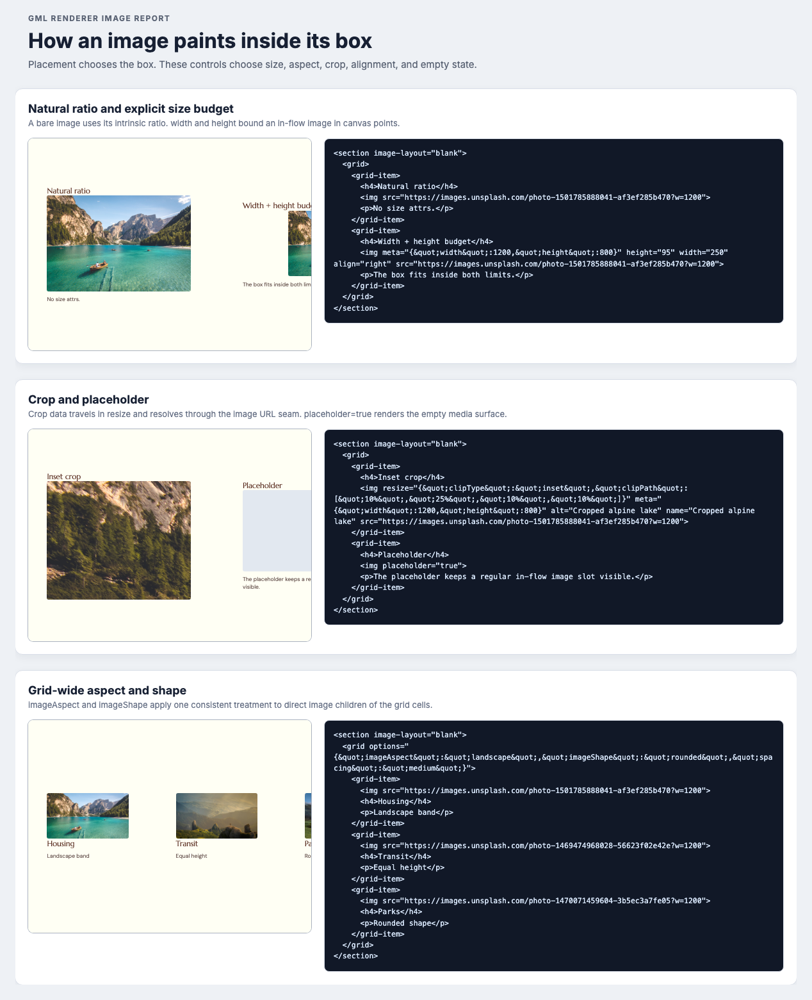

image
This node renders flow images, background images, icons, videos, crops, links, and placeholders.
GML renderer inventory
This page maps image nodes to their containers, geometry, stacking role, fit, size, and state. Each Storybook capture displays the GML beside the render from the same schema node.
The container defines the image box. The node attrs define the source and the paint inside that box.
imageThis node renders flow images, background images, icons, videos, crops, links, and placeholders.
positionedImageBoxThis node renders absolute images with canvas geometry. It also supports rotation and the behind-flow layer.
background creates a backdrop role. A positioned box
owns its geometry. Regular images stay in flow.
The image stays in flow. A fluid card grows with the image and the other content.
<section> <p>Intro</p> <img width="320" align="center" /> </section>
Each <img> is a direct child of a
<grid-item>. The heading and paragraph follow the
image.
imageAspect and imageShape values need GML or import.
<grid options='{
"imageAspect":"landscape",
"imageShape":"rounded"
}'>
<grid-item>
<img src="housing.jpg" />
<h4>Housing</h4>
<p>Uniform landscape image.</p>
</grid-item>
<grid-item>
<img src="transit.jpg" />
<h4>Transit</h4>
<p>The same aspect and shape.</p>
</grid-item>
</grid>
The image covers one cell below its content. The cell can add a contrast overlay.
background="true". The editor has no direct cell-background control.
<grid-item> <img background="true" /> <h2>Text above</h2> </grid-item>
A direct child image covers the card canvas below the full-card grid.
<section> <img background="true" /> <grid>…</grid> </section>
A positioned box uses the 960×540 canvas coordinate system on a fixed 16:9 card.
<box type="image" x="650" y="115" w="235" h="310" rotation="5" />
The image paints above the card surface and below the flow content.
<box type="image" behind-flow="true" x="90" y="60" w="780" h="420" />
The freeform wrapper adds no geometry. Each child box owns its geometry.
<section>
<freeform>
<box type="image" … />
</freeform>
</section>
<img fill> and contain are not supportedImage nodes use regular flow, background, or positioned placement. The supported model has no foreground mode that stretches an image to a complete grid cell.
<img fill="true"> does not define a supported foreground cell-fill mode.<img fill="contain"> does not define a supported contain mode.GML authors use only the supported paths above. The renderer report does not present fill or contain as image controls.
fill="true".fill="contain".Discussion topic
GML uses one background image role in two parent
scopes. The parent determines whether the image covers one cell
or the complete card.
| Scope | GML parent | Coverage | Text above it | Authoring UI |
|---|---|---|---|---|
| Card background | <section> |
The complete card | All card flow content | Card style → Background image |
| Cell background | <grid-item> |
One grid cell | Content in that cell | No direct control for background="true" |
A card background stays independent from the root grid. This separation preserves the content hierarchy when the background covers every root cell.
The card owns its background color. The card also owns its background image. The grid owns content layout.
A card-level background sits behind any root layout. It does not add a wrapper cell or change the content hierarchy.
The two-column grid stays the root content with a card background. If the root cell owns the background, it must wrap another grid.
The background and the two-column layout stay as independent siblings.
<section>
<img background="true" />
<grid>
<grid-item>Left</grid-item>
<grid-item>Right</grid-item>
</grid>
</section>
The background requires a wrapper cell and a nested grid for the same two-column layout.
<section>
<grid>
<grid-item>
<img background="true" />
<grid>
<grid-item>Left</grid-item>
<grid-item>Right</grid-item>
</grid>
</grid-item>
</grid>
</section>
The main choice is whether local and global background surfaces belong to one role with two scopes.
Earlier architecture context: Slack thread from July 27.
Each dark panel contains serialized GML. The adjacent card renders the same ProseMirror node through the real renderer components.
Fluid, grid, backdrop, freeform, behind-flow, and freeform-only examples.

Size budgets, crop data, placeholders, aspect, and shape.

These attrs control the image inside its box. The parent still owns the placement geometry.
| Control | Storage | Renderer behavior |
|---|---|---|
| Source | src or tempUrl |
The source resolver selects the display URL. |
| Crop |
resize.clipType and
resize.clipPath
|
The normal image path requests a cropped image URL. |
| Width | resize.width |
The value sets the in-flow width in canvas points. |
| Height budget | resize.height |
The value limits the image and keeps its aspect ratio. |
| Alignment | horizontalAlign |
The image aligns to the start, center, or end. |
| Background role | background=true |
The image becomes a cell or card backdrop. |
| Placeholder | showPlaceholder=true |
The renderer displays the empty media surface. |
| Upload state | uploadStatus |
The renderer displays status chrome or a spinner. |
| Generation state | loadImageStatus |
A client slot displays the loading or error state. |
| Link | href and clickBehavior=newTab |
The renderer wraps the image in a new-tab link. |
| Lightbox | clickBehavior=expand |
The client supplies the lightbox in read mode. |
These details explain the boundaries between flow images, background images, media variants, and legacy documents.
imageAspect accepts auto,
square, landscape, or
portrait.
imageShape accepts square,
rounded, or circle. A nested grid does
not inherit the parent band.
A cell background covers one grid cell. A card background must be a direct child of the card.
Stored flow width and alignment do not size a background image. The parent owns its full-bleed geometry.
A monochrome icon uses a CSS mask and
currentColor. A pictographic icon uses a normal
image element.
An uploaded video uses the figure contract. The client supplies
VideoSlot. A thumbnail displays the poster.
A normal image sends crop data through the client source resolver and imgproxy.
A positioned image box uses its own geometry. It can also use SVG or safe CSS clipping.
Canvas cards use the new renderer image path. Legacy documents keep the legacy image view.
Grids replace new gallery layouts. Grid marker icons use marker data instead of normal image children.
The client supplies crop controls, resize handles, replacement controls, status UI, and lightbox UI.
packages/gml-renderer/src/components/Image/ImageRenderingReport.stories.tsx
creates real schema nodes. The story calls toGml on the
same nodes that it renders.